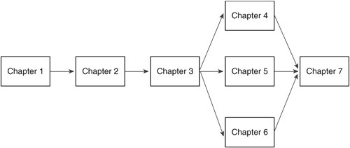

PrefaceHaving started off as a hacker's exploratory journey to create a free UNIX-like operating system (OS), today Linux represents a viable competitive solution in use worldwide. Being freely redistributed and with all the strengths of UNIX-based operating systems, it is everywhere. People use it to deploy intensive industry solutions such as file servers, Web servers, e-mail, and middleware support. And yet, the operating system is flexible enough to be run as a desktop client on personal computers (PCs). Although the journey to success has been bumpy, it was worth it. Linux has always been popular within the university setting, but it has really taken off within the corporate world only in the past few years, in part because of the support of and acceptance by large companies. Slowly, over the past few years, Linux has come closer to becoming an enterprise-ready OS for use in such areas as telecom, government, manufacturing, and others. Recent news of accelerated Linux adoption is all over trade magazines, and studies done by the large research firm Forrester Research report that Linux is the fastest-growing OS (running mission-critical applications in 53 percent of 140 large North American companies[1]). The same Forrester study reports that 52 percent of the same 140 companies run their new applications on Linux, and 44 percent of them use Linux to port their older applications to newer hardware.
A similar study[2] done by SG Cowen suggests that, more and more, Linux is becoming the OS of choice. Therefore, developers need a structured and concise book that examines the differences between Linux and UNIX operating systems such as Solaris, HP-UX, and AIX. Software programmers familiar with writing applications on UNIX operating systems such as Solaris, HP-UX, and AIX now have to learn how to program on Linux.
This book is written for those tasked with porting applications to the Linux environment (developers, application architects, and project managers):
How This Book Is OrganizedChapter 1, "Porting Project Considerations," supplements existing project management material by pointing out specific tasks that project managers and application architects need to think about before and during a porting project. It introduces you to the porting process and methodology we use in porting projects. Each step in the porting process presented forms the basis of discussion for the chapters that follow. Chapter 2, "Scoping," discusses the first step in the porting process. Its general presentation of the Linux environment includes an examination of the available compilers, the GNU binutils, the Java environment, shells, and packaging options available on Linux. With the help of the assessment questionnaire in Chapter 1, you can assess the application to be ported to determine the level of work required to port the application. At the end of this chapter, a checklist of project management tasks helps you scope out the preliminary tasks for the project. Chapter 3, "Analysis," discusses how to investigate the application architecture at a deeper level. Like Chapter 2, this chapter examines technical features available in Linux. This chapter covers, among other things, what Linux makes available in terms of application programming interfaces (APIs), library functions, library versioning implementation, and system features such as large page support. Each topic invites the porting engineer to ascertain that the application can be ported using Linux functionalities and features. As part of our porting methodology, and to eliminate risk as much as possible, the analysis step exists to uncover any variables (known and unknown) that can come up during the porting phase. Chapter 4, "Porting Solaris Applications," Chapter 5, "Porting AIX Applications," and Chapter 6, "Porting HP-UX Applications," are the three core chapters of this book. Each comprehensive chapter details differences and similarities between the source (Solaris, AIX, or HP-UX) and the target (Linux) operating system. Topics discussed include standards support, compiler options, linker options, a comparison of system calls, a comparison of library calls, and threads. Each chapter helps porting engineers quickly find answers to questions about porting applications to Linux. These chapters answer common questions such as, "Do the APIs used in my application exist on Linux?" and "How do Linux POSIX threads compare to Solaris threads?" Chapter 7, "Testing and Debugging," covers Linux debugging and performance tools. As the porting work progresses to the testing and debugging phase, porting engineers will encounter diverse issues from software bugs to performance bottlenecks. This chapter discusses the tools that porting engineers can use to address these issues. Debugging tools such as the GNU debugger, memory leak tools, cscope, and performance tracing tools are discussed. This chapter also identifies Web sites where you can download these tools. The appendix include tables of APIs, compilers, and linker options, providing a quick reference when you are porting from the source to the Linux OS. You also learn about Linux on POWER (that is, the porting differences when porting to Linux running on the IBM POWER architecture). How to Use This BookYou can go through this book in several ways. However, we recommend that you start with Chapter 1 to gain an understanding of our methodology and thinking. After reading the first chapter, proceed with Chapters 2 and 3. When you get to the porting step, choose the operating system from which the application is being ported, and read that chapter. Then, after you have completed the porting, proceed to Chapter 7. This process is shown in Figure P-1. Figure P-1. Recommended way to work through this book Another way to work through this book is to skip Chapters 1, 2, and 3 entirely and jump directly to one of the porting chapters (4, 5, or 6). In this way, you can use this book as reference material for porting projects already under way (rather than as a guide). Some technical information in Chapters 4, 5, and 6 is intentionally repeated so that those who want to port only from one particular UNIX platform to Linux will have one self-contained chapter to reference. Although our original intent with this book was to create a porting guide (from UNIX to Linux), it has also become a comprehensive development and troubleshooting reference. As a development reference, it contains code examples to solve specific problems (such as building shared and static archive libraries, using POSIX threads, interprocess communications, and more). And depending on the platform you are porting from, it gives a side-by-side solution comparison of the three popular UNIX platforms (HP, Solaris, and AIX), including what it would take to create the same solution on Linux. In essence, this book is three books in one. Regardless of your porting needs, this book explores solutions to some of the most common coding practices and provides a wide array of solutions (based on experience) to the most common problems Linux porting engineers face. As a troubleshooting reference, this book provides code examples, compiler and linker flags, and alternatives for solving the most common nuances that porting engineers face when porting code to Linux. We have attempted to cover as much material as possible and believe the information will, at least, provide a starting point for additional research that may be required on your part to address specific needs. For additional assistance on porting, you can research the Internet and some of the following references:
We hope you enjoy reading this book as much as we have enjoyed writing it! |